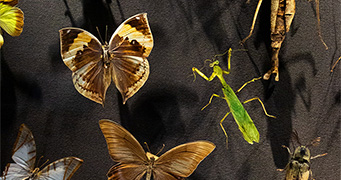

Et mylder af liv
- en udstilling om biologisk mangfoldighed på Jorden.
Museets største udstilling handler om det ufattelige mylder af liv, der findes på Jorden. Mest om det liv vi kender, men også om alt det, vi ikke kender endnu - samt om arter, vi aldrig lærer at kende, fordi de vil være uddøde, før vi når at opdage dem!
Udstillingens historier har både en global og en dansk vinkel. Derfor er vi er glade for, at et centralt element i udstillingen er den globale kaskelot, som strandede på Jyllands østkyst ved Sæby.
Udstillingen viser den store biologiske mangfoldighed i verden, og rummer elementer fra hele klodens imponerende natur.

Du kan møde de dyr du kan møde i det fri i Danmark, som ræve eller kronhjorte, og se nærmere på de mere eksotiske dyr som flodhesten, hvalrossen eller du kan stirre direkte ind i øjnene på en isbjørn.
Få et indblik i hvordan dyrene ser ud inden i, når du undersøger skeletter fra aber, krododiller eller endda et kranie fra en elefant!
De fleste elementer i udstillingen er originale, autentiske genstande fra naturen. De er indsamlet, konserveret og opbevaret gennem mange år. Døde, ja - men det er skam den ægte vare, som der samlet set er investeret et utroligt antal arbejdstimer i. Nu kan de igen fremstå "levende" og på hver deres måde fortælle dig om verdens ufattelige mangfoldighed!